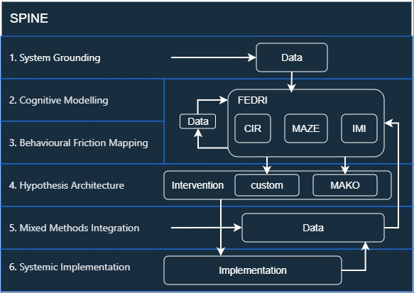

Barbara Jeziorek
Cognitive Systems R&D · Behaviour & System Dynamics
I work at the intersection of cognitive architectures, behavioural modelling, and systems research. I study how people think, decide, and regulate under cognitive and emotional load, and translate these dynamics into mechanistic models that can be mapped onto agents, simulations, or system‑level frameworks.
My skillset bridges cognitive systems research with practical technical execution. I design research pipelines, evaluate feasibility early, and build or repurpose tools, infrastructure, and system components when needed. I can implement full systems end‑to‑end — from backend logic and data structures to deployment — but I increasingly focus on architecture, modelling, and pipeline design rather than coding itself.
I develop original research methodologies and apply agent‑mapping, internal‑simulation reasoning, and hypothesis‑driven validation to understand behaviour in complex, constraint‑heavy environments. I turn qualitative dynamics into structured models that inform product strategy, experimentation, and technical design.
Proprietary frameworks: SPINE · CIR · MAKO · MAZE · FEDRI · IMI
Selected Projects
These projects show how I apply cognitive‑systems R&D across domains — from education and neurodivergence to enterprise engineering and behavioural forensics.
Kitchen Emergent Life
Performed full agent‑based simulations, modelling the messy kitchen as a cognitive‑environmental system, identifying friction points (sensory mismatch, object identity, protocol absence), and redesigning the environment to align with cognitive patterns.
SPINE CIR FEDRI Kitchen
- Complete elimination of the “emergent life” cycle.
- Stable, self‑maintaining system after interventions.
- Demystified my frameworks for people seeing them for the first time.
AI Behaviour Evaluation (FEDRI → LLM Misalignment Testing)
Used FEDRI to generate agent‑based cognitive profiles under different stress and regulation states (CIR levels), then ran controlled conversations between these simulated agents and an LLM to evaluate misalignment, reasoning breakdowns, refusal patterns, and interpretive drift.
FEDRI CIR AI alignment
- Identified LLM blind spots across CIR‑based cognitive states.
- Reframed prompts that triggered edge‑case failures, restoring stability.
- Tested a wide range of dysregulated synthetic behaviours and analysed the model’s reactions.
- Mapped escalation, refusal, hallucination, and context‑loss patterns.
MAKO / Maths in New Clothes
Reframed maths from a punishment‑driven activity into a progress‑driven system using a meta‑layer of points, events, and safe failure. Designed for students who actively avoided the subject.
SPINE MAKO Behavioural Design Education
- Significant increase in engagement and attendance.
- Reduced stress and avoidance behaviours in high‑anxiety and ND students.
- Validated predictive cognitive models.
Formal case study →
What happens when an R&D engineer hacks an education system and… wins the grant →
FEDRI HI-RES / Behavioural forensics
Delivered a neutral, mechanics‑based explanation that transformed an unresolvable dispute into an interpretable cognitive system, enabling clarity without blame.
FEDRI Behavioural forensics Cognitive systems Ethics
- Improved team clarity and self‑regulation.
- Reconstructed a workplace conflict using high‑resolution cognitive forensics.
- Validated high‑resolution cognitive modelling in a real‑world environment.
MAZE / SelfScape
Designed a planning system for ADHD/ASD/PDA/chronic fatigue profiles where linear calendars and time‑based pressure fail. MAZE models tasks as agents with emotional and cognitive load, generating adaptive views.
SPINE MAZE Neurodivergence Cognitive Systems
- Reduced avoidance and shutdown compared to traditional planning tools.
- Fractal task decomposition and narrative‑based planning for unstable energy patterns.
- First implementation of MAZE as a reusable cognitive architecture.
Chaperone Directive for Legacy CRM
Introduced a “biochemical chaperone” layer using Angular directives to stabilise layout and styling across hundreds of inconsistent components without rewriting legacy CSS.
SPINE Systems Engineering Legacy Code R&D
- Adopted as the new UI standard across the platform.
- Saved hundreds of developer hours and reduced cognitive load.
- First successful system‑level intervention in a change‑resistant environment.
Formal case study →
What happens when an R&D engineer ends up in a 7‑year‑old legacy CRM and… gets inspired by
biochemistry →
Early R&D – Game Engine Experiments
Early projects where I repurposed game engine systems (dialogue bubbles, idle logic) to implement features the engine didn’t support: multi‑character control, animated companions, and custom logic layers.
Systems Thinking Repurposing Tools Prototyping
- Built a full game in 5 days in a new language to rescue a failing team project.
- Turned a dialogue system into an animation engine for a flying crow companion.
- First proof that my natural mode is R&D under constraints.
Narrative
article – “What happens when an R&D engineer ends up with a game and no code” →
Narrative
article – “What happens when an R&D engineer refuses to accept a one‑character limit in a game
engine” →
Frameworks
Cognitive & System Frameworks
These are the core cognitive and system frameworks I use to structure research, design, and implementation. They are all battle‑tested in real environments (excluding IMI which is still in development phase).

End‑to‑end research and intervention framework for environments where behaviour is shaped by emotional load, cognitive constraints, structural limitations, or neurodivergent patterns.
A multi‑resolution cognitive engine for agent modelling, behavioural simulation, and emergent narrative systems, used to generate psychologically coherent agents and predict behaviour under pressure, load, and complex constraints.
A five‑level model of cognitive stability that explains how emotional load and stress alter information processing, interpretation, and behavioural control.
A behavioural system for learning environments where users actively avoid the core activity (e.g. maths). MAKO builds a meta‑layer over content to reframe effort, risk, and reward.
A cognitive architecture for agent‑like tasks, emotional‑load propagation, and fractal planning. First implemented in SelfScape, a neurodivergent‑friendly planning system.
How do I work
My best work happens where constraints are hard, behaviour is messy, and the brief sounds like: “Nothing works. Do whatever you think is right — but it has to work.”
My projects are driven by pattern‑based reasoning, predictive cognition, and systems thinking. What I describe as intuition is, in practice, a form of rapid cognitive modelling — I recognise the underlying structure of a problem and generate the architecture of a solution before any formal analysis begins. From there, I move through an iterative SPINE cycle: system grounding → cognitive modelling → behavioural friction mapping → hypothesis architecture → mixed‑methods integration → systemic implementation.
Operating mode
- R&D first — I prototype, test, break, and iterate fast.
- Framework‑driven — CIR, FEDRI and SPINE guide decisions when intuition is not enough.
- Constraint‑native — I treat budget, legacy, and politics as design inputs, not obstacles.
How I think
- Systems — I see projects as living systems, not static features.
- Cognitive — I model how people actually behave, not how they “should”.
- Emergent — I design for resilience, not for perfect control.
- Predictive — I anticipate behavioural outcomes before formal analysis.
Where I add the most value
- Early‑stage R&D, prototyping, and concept architecture.
- Behavioural and cognitive systems in constrained environments.
- Translating messy reality into stable frameworks and interventions.
- Rapid formalisation of intuitive insights into scalable architectures.
Process transparency
Examples of documents:- Croatian project: Raw cognitive dump (14h) →
- Croatian project: R&D architecture →
- Croatian project: Product Strategy Case Study →
- Croatian project: Cognitive Systems Blueprint →
- IMI framework development: (narrative + agentarium fragments) What happens when an R&D engineer realises a critical module is missing from her architecture and ends up... generating it from within an incomplete system →
- (narrative + agent simulations) What Happens When an R&D Engineer Avoids Doing the Dishes, Degrades the Kitchen System, and Ends Up… Buying More Dishes
What I don't do
Linear execution without thinking
I don’t follow rigid checklists, predefined workflows, or “just build what we said” instructions. If a project requires blind execution without understanding the system, I’m the wrong person.
Projects that avoid complexity
I don’t simplify problems just to make them look neat. If the real issue is messy, emotional, behavioural, or systemic — that’s where I work best. If the expectation is “make it look simple even if it’s not”, I decline.
Designing without access to real behaviour
I don’t design in a vacuum. If I can’t observe behaviour, test hypotheses, or validate assumptions, the work won’t be meaningful — and I won’t take it.
Projects that require emotional neutrality
I don’t detach from the emotional and cognitive reality of users. If a team wants “clean data without human messiness”, I’m not the right match.
Pretending constraints don’t exist
I don’t design fantasy solutions that ignore time, budget, politics, legacy systems — or the law. If a team wants “innovation without reality”, including removing legal safeguards, bypassing regulatory requirements, or shipping features that enable harmful or illegal user actions, I step back. I design systems that prevent unsafe behaviour, not ones that allow it.
Cultures that punish critical thinking
I don’t work in cultures where questioning assumptions is treated as a threat, where evidence is ignored because it’s inconvenient, or where accuracy matters less than obedience. If a team expects me to suppress analysis to fit a narrative, I step back.
Work that requires masking or shrinking
I don’t tone down my intensity, curiosity, or cognitive speed to fit into environments that fear unconventional thinking. If a team needs someone “less much”, I’m not that person.
Work that requires ignoring my predictive intuition
I don’t suppress early pattern recognition just to follow a slow, linear process. If a team needs someone who “waits for permission to think”, I’m not that person.
Performative UX deliverables
I don’t produce personas, journey maps, or glossy artefacts created solely for presentation theatre. If a deliverable doesn’t change behaviour, inform decisions, or improve the system, I don’t make it.
Intellectual Ownership & Framework Use
CIR, FEDRI, MAZE, MAKO, SPINE and IMI are original cognitive frameworks that I developed independently prior to any employment. They form the conceptual backbone of my work in cognitive modelling, behavioural design, and system‑level analysis.
When I apply these frameworks within an organisation, all implementations created as part of my role — such as code, documentation, prototypes, or internal tools — become the property of that organisation. The frameworks themselves, including their structure, logic, theoretical extensions, and future development, remain my intellectual work and authorship.
-
This distinction reflects standard practice in R&D and cognitive systems:
- theory and methodology belong to the researcher,
- applied artefacts belong to the organisation.
These frameworks are open for conceptual use, but authorship remains mine. Extensions must reference the original models.